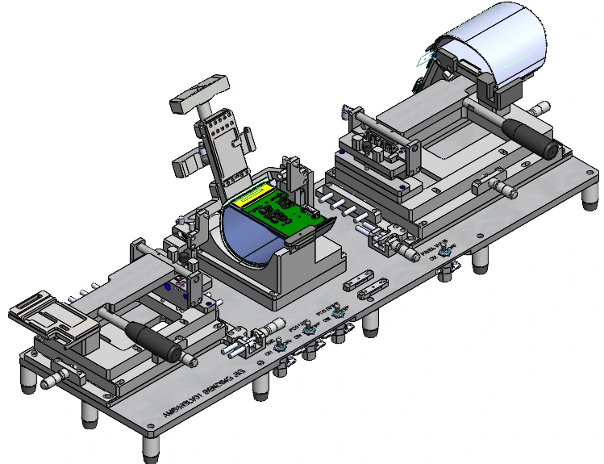
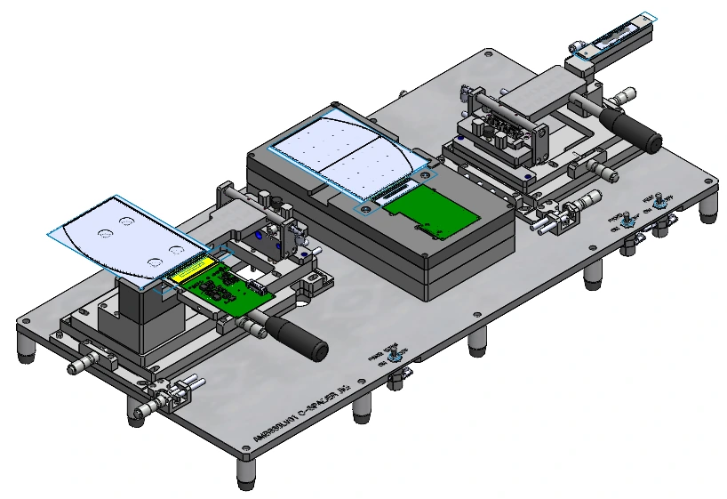
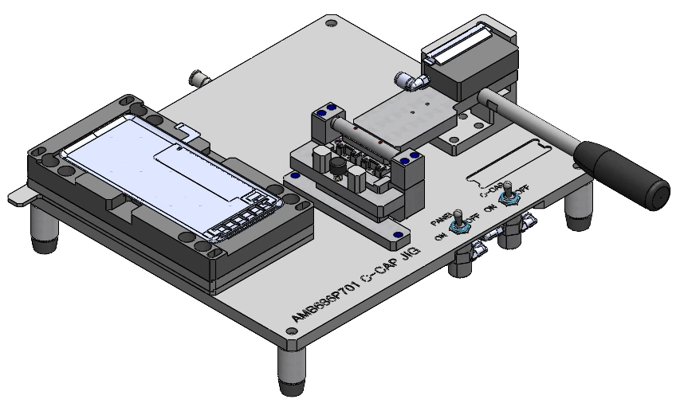
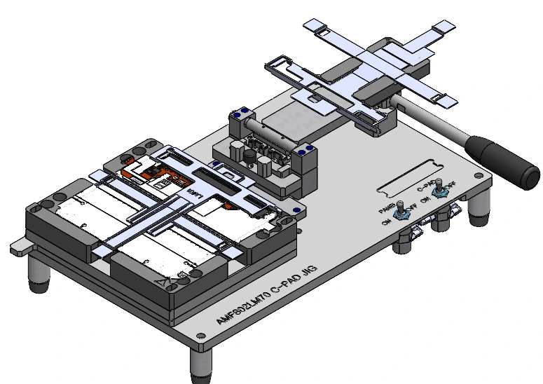

PROJECT 03
SDC MANUAL JIG SERIES
SDC 개발 및 LINE 공정에 필요한 Manual Jig 제작
본인 역할 · 인력 구성
컨셉 구상 1명 (100%) / 기구설계 1명 (100%) / 발주, 조립, 구매 1명(100%)
매년 70종류의 Manual Jig 설계, 각 Jig당 3~5일 소요
설계 · 구현 근거 보기 ↓

원본 확대 이미지를 불러오지 못했습니다. 원본 확대 링크를 이용해 주세요.01 / PURPOSE & ROLE
목적과 수행 범위
원본 13–14페이지삼성 디스플레이 1차 벤더의 설계 담당자로서 신규 개발 및
LINE 공정에 필요한 MANUAL JIG 설계 및 조립과 시중품 구매
업무를 수행
- 고객사 요청에 맞는 JIG 설계를 위한 미팅 및 소통업무
- Solid Works Tool을 사용한 3D 설계 및 2D 도면화 작업
- ERP 시스템을 통한 업체 발주 및 납품 일정 관리
- 시중품 구매 및 조립, 테스트 업무 진행
작업 기간
매년 70종류의 Manual Jig 설계, 각 Jig당 3~5일 소요
인력 구성(기여도)
컨셉 구상 1명 (100%) / 기구설계 1명 (100%) / 발주, 조립, 구매 1명(100%)
사용언어 및 개발 환경
3D Tool : Solid Works 2D Tool : Auto Cad 2D
참고 자료
프로젝트 목적
SDC 개발 및 LINE 공정에 필요한 Manual Jig 제작
프로젝트 내용
각종 모바일, 패드, 모니터 등 삼성 디스플레이에서 생산하는 디스플레이 전반에 대한 제작 공정 시 부착해야 하는 PART를 Manual Jig를 통해 정 위치에 반복적으로 작업이 가능한 구조를 설계하여 납품
주요 업무 및 상세 역할
디스플레이 특성과 도면 및 부착 PART 내용 확인 전체적인 Lay-out 배치 및 기구 설계(CNC 가공), 부품 선정 도면 출도 후 발주 및 입고 일정 관리 조립 및 테스트 후 출고
설계 근거 · 원본 14페이지


원본 확대 이미지를 불러오지 못했습니다. 원본 확대 링크를 이용해 주세요.02 / 기구설계
Lay-out 배치 및 전반적인 설계(CNC 가공), 부품 선정
원본 15페이지Solid Works Tool을 이용한 3D 모델링 설계
제품 구성에 맞는 소재와 가공방식 선택 (CNC 가공)
Lay-out 배치 및 필요한 부품 설계
작업 내용
AL6061 및 POM재질 등 필요한 사양에 따른 3D 설계
Manual Jig 특성 상, 디스플레이 및 PART 공차를 반영해 STAGE 가변성을 부여
제작비 절감을 위한 공용 PART를 최대한 활용
고객사 사용 시 각종 변수를 대응하도록 호환성 극대화


원본 확대 이미지를 불러오지 못했습니다. 원본 확대 링크를 이용해 주세요.

원본 확대 이미지를 불러오지 못했습니다. 원본 확대 링크를 이용해 주세요.